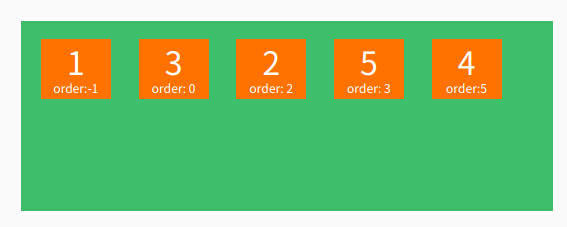

弹性盒模型的一些知识
弹性盒模型（ Flexible Box或FlexBox）是一个CSS3新增布局模块，官方称为CSS Flexible Box Layout Module，用于实现容器里项目的对齐、方向、排序（即使在项目大小位置、动态生成的情况）, 分配空白空间 。弹性盒模型最大的特性在于，能够动态修改子元素的宽度和高度，以满足在不同尺寸屏幕下的恰当布局。
弹性盒子是由弹性容器（flex container）和弹性子元素（flex item）组成，弹性盒子有一个主轴（main axis）和一个纵轴（cross axis），弹性子元素沿着主轴依次排列 ，侧轴垂直于主轴。弹性容器的主轴开始（main start）、主轴结束（main end）和侧轴开始（cross start）、侧轴结束（cross end）代表了弹性子元素排列的起始和结束位置。具体可以看下面的图。
| 属性 | 属性说明 |
|---|---|
| flex-direction | 设置主轴方向，确定弹性子元素的排列方式 |
| flex-wrap | 当弹性子元素超出弹性容器范围时是否换行 |
| flex-flow | flex-direction和flex-wrap的快捷方式，复合属性 |
| justify-content | 设置弹性子元素主轴上的对齐方式 |
| align-items | 设置弹性子元素侧轴上的对齐方式 |
| align-content | 侧轴上有空白时且有多行时，设置弹性子元素侧轴的对齐方式 |
使用方法：
flex-direction:row |row-reverse |column |column-reverse
| 属性值 | 含义 |
|---|---|
| row（默认值） | 主轴为水平方向。排序方向与页面的文档顺序相同。如果文档顺序是ltr，则排列顺序是从左到右；如果文档顺序是rtl，则排列顺序是从右到左。 |
| row-reverse | 主轴为水平方向。排序方向与页面的文档顺序相反。 |
| column | 主轴为垂直方向。排列顺序为从上到下 |
| column-reverse | 主轴为垂直方向。排列顺序为从下到上 |
其属性的效果图如下：
使用方法：flex-wrap: nowrap | wrap | wrap-reverse
| 属性值 | 含义 |
|---|---|
| nowrap（默认值） | 溢出时不换行 |
| wrap | 溢出时自动换行 |
| wrap-reverse | 溢出时自动换行，翻转排列 |
其效果图如下：
使用方法：flex-flow: [flex-direction] || [flex-wrap]
含义：复合属性（flex-direction和flex-wrap），设置弹性子元素的排列方式
使用方法：justify-content: flex-start | flex-end | center | space-between | space-around
| 属性值 | 含义 |
|---|---|
| flex-start（默认值） | 主轴开始对齐，主轴为横轴，ltr环境下，左对齐 |
| flex-end | 主轴结束对齐，主轴为横轴，ltr环境下，右对齐 |
| center | 居中对齐 |
| space-between | 第一个、最后一个对齐弹性容器的边缘，其余均匀分布 |
| space-around | 全部均匀分布 |
其效果图如下：
使用方法：align-items: flex-start | flex-end | center | baseline | stretch
| 属性值 | 含义 |
|---|---|
| flex-start | 侧轴开始对齐，主轴为横轴，顶对齐 |
| flex-end | 侧轴结束对齐 |
| center | 居中对齐 |
| baseline | 基线对齐 |
| stretch（默认值） | 从侧轴开始到侧轴结束铺满整个侧轴 |
其效果图如下：
使用方法：align-content: flex-start | flex-end | center | space-between | space-around | stretch
| 属性值 | 含义 |
|---|---|
| flex-start | 主轴开始对齐，主轴为横轴，ltr环境下，左对齐 |
| flex-end | 主轴结束对齐，主轴为横轴，ltr环境下，右对齐 |
| center | 居中对齐 |
| space-between | 第一个、最后一个对齐弹性容器的边缘，其余均匀分布 |
| space-around | 全部均匀分布 |
| stretch（默认值） | 各行伸展以占用剩余空间。如果剩余空间是负数，该值等效于flex-start |
其效果图如下：
| 属性值 | 含义 |
|---|---|
| order | 控制弹性容器里子元素的顺序，数值小的排在前面，可以为负值 |
| flex-grow | 设置弹性子元素的扩展比率 |
| flex-shrink | 设置弹性子元素的收缩比率 |
| flex-basis | 指定弹性子元素伸缩前的默认大小值，相当于width和height属性 |
| flex | flex-grow，flex-shrink和flex-basis属性的复合属性 |
| align-self | 允许独立的弹性子元素覆盖弹性容器的默认对齐设置（align-items） |
使用方法：order: integer number
其属性效果图如下：

使用方法：flex-grow: number
含义：设置弹性子元素的扩展比率，不允许为负值，默认值为0。根据弹性盒子元素所设置的扩展因子作为比率来分配剩余空间。
其属性效果图如下：
使用方法：flex-shrink: number
含义：设置弹性子元素的收缩比率，不允许为负值，默认值为1。根据弹性盒子元素所设置的扩展因子作为比率来收缩空间。
其属性效果图如下：
使用方法：flex-basis: <length> | <percentage> | auto
含义：设置弹性子元素的伸缩基准值，不允许为负值。默认值为auto，无特定宽度（高度）。
使用方法：flex: none | [flex-grow] || [flex-shrink] || [flex-basis
含义：复合属性，设置弹性子元素的如何分配空间
使用方法：auto | flex-start | flex-end | center | baseline | stretch
含义：设置弹性子元素的在侧轴上的对齐方式，与align-items相同。设置某个弹性子元素的对立对齐方式。
其属性效果图如下：
多列（Multi-column）是一个CSS3新增布局模块，官方称为Multiple column layout，可以比较轻松的实现多列布局，比如图片瀑布流。
| 属性 | 属性说明 |
|---|---|
| columns | 复合属性（column-width和column-count），设置宽度和列数 |
| column-width | 设置每列的宽度 |
| column-count | 设置列数 |
| column-gap | 设置列之间的间隙 |
| column-rule | 复合属性（column-rule-width、column-rule-style和column-rule-color），设置列之间的边框样式 |
| column-fill | 设置列的高度是否统一 |
| column-span | 设置是否横跨所有列 |
使用方法：column-width: length | auto
| 属性值 | 含义 |
|---|---|
| auto（默认值） | 浏览器决定列的宽度 |
| length | 用长度值来定义列宽。不允许负值 |
使用方法： column-count: integer number | auto
| 属性值 | 含义 |
|---|---|
| auto（默认值） | 列数将取决于其他属性，例如："column-width" |
| imteger number | 用整数值来定义列数，列的最佳数目将其中的元素的内容无法流出。 |
使用方法：columns: [column-width]｜[column-count]
含义：复合属性设置列的宽度和个数
使用方法：column-gap: length | normal
| 属性值 | 含义 |
|---|---|
| normal（默认值） | 与font-size大小相同。假设该对象的font-size为16px，则normal的值为16px，以此类推。 |
| length | 用长度来定义列与列之间的间隙。不允许为负值。 |
使用方法：column-rule: [column-rule-width] || [column-rule-style] || [column-rule-color]
含义：设置列与列之间的边框，和border属性相似
| 属性值 | 含义 |
|---|---|
| column-rule-width | 设置列与列之间的边框的厚度 |
| column-rule-style | 设置列与列之间的边框的样式 |
| column-rule-color | 设置列与列之间的边框的颜色 |
使用方法：column-fill: auto | balance
含义：设置所有列的高度是否统一
| 属性值 | 含义 |
|---|---|
| auto（默认值） | 列高度自适应内容 |
| balance | 所有列的高度以其中最高的一列统一 |
使用方法：column-span: none | all
含义：对象元素是否横跨所有列
| 属性值 | 含义 |
|---|---|
| none（默认值） | 不跨列 |
| all | 横跨所有列 |
CSS3弹性盒子的基本知识就是这些了，如果有错的话，我会及时更改的！这篇文章就到此结束了，👋👋👋